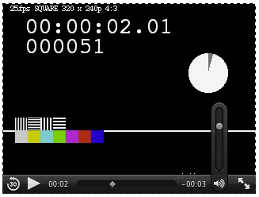
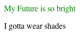

[译]什么是Shadow Dom？2012-06-07 18:24:00
如果你做过网站，那么很可能你已经用过一些JavaScript类库。既然如此，你可能会对这些不知名的类库作者心存感激。
这些作者——web开发领域的勇士们——都面对着同样的一个问题——封装。他们会花大量的精力在面向对象的经典问题之一上面，即如何封装自己的代码，以便与类库使用者的代码分离。
除了SVG，现在的Web平台只提供了一种原生的方法去隔离代码块，这并不优雅。没错，我说的就是iframe。对大部分需要封装的场景来说，frames太重而且限制太多。
如果我需要把每个自定义的按钮都放到iframe里，你是什么感觉，会不会疯掉？
所以，我们需要一些更好的东西。事实上，大部分的浏览器已经变相地提供了一种强大技术去隐藏一些实现细节。这个技术就是所谓的“shadow DOM”。
我的名字是DOM，Shadow DOM
Shadow DOM是指浏览器的一种能力，它允许在文档（document）渲染时插入一棵DOM元素子树，但是这棵子树不在主DOM树中。看一个简单的slider：
<input id="foo" type="range"/>
把这段代码放到webkit内核的浏览器中，它会这样显示：

很简单吧，这里有一个滑槽，还有一个滑块可以沿滑槽滑动。
嗯。一切看起来都那么美好，喝杯咖啡先……等下等下，这里居然有一个可以在input元素中滑动的元素！为什么我不能通过JavaScript看到它？
var slider = document.getElementsById("foo");
console.log(slider.firstChild); // 返回 null
这是一种魔法么？
我的观点来看，不是。这只是shadow DOM在起作用。你看，浏览器的开发者们已经意识到了手工编写这些DOM元素的表现和行为很困难而且很SB。所以，从一定程度上讲，他们骗了我们，给了我们一个输入框，但拥有比输入框更多的功能。
他们为你——web开发者设定了一个边界，界定了哪些是你可以访问的，哪些实现细节是访问不到的。然而，浏览器本身却可以随意跨越这个边界。设置这样一个边界之后，它们就可以在你看不见的地方使用熟悉的web技术、同样的HTML元素去创建更多的功能，而不是像你一样要在页面上用div和span来堆。
有一些很简单，就像上面说的slider。而有一些却相当复杂。我们来看一下video元素，它有一些按钮、进度条、hover态的音量控制，像这样：

所有的这一切都只是HTML和CSS——但是是隐藏在shadow DOM子树中的。
借用XXX的一首诗，“它是怎样工作的？”为了直观一些，我们假装可以用JavaScript操作它。看这个简单的页面：
<html>
<head>
<style> p { color: Green; } </style>
</head>
<body>
<p>My Future is so bright</p>
<div id="foo"></div>
<script>
var foo = document.getElementById('foo');
// 注意：这里只是模拟，不是真实的API
foo.shadow = document.createElement('p');
foo.shadow.textContent = 'I gotta wear shades';
</script>
</body>
</html>
我们获得了一个这样的DOM树：
<p>My Future is so bright</p>
<div id="foo"></div>
但是它像是被这样渲染出来的：
<p>My Future is so bright</p>
<div id="foo"> <!-- shadow subtree begins -->
<p>I gotta wear shades</p>
</div> <!-- shadow subtree ends -->
看起来是这样：

注意一下，为什么渲染的句子的第二部分不是绿色的？这是因为文档（document）中选择器p不能获取到shadown DOM。很酷对不对？！如果一个框架开发者被赋予这样的能力会怎么样？想象一下你只需要写你的widget，而不用担心被不知哪里蹦出来的选择器愚弄……简直令人陶醉。
事件的情况
为了保持自然，shadow DOM子树中的事件可以在文档（document）中被监听。比如，你点击一下audio元素中的静音按钮，你可以在一个包裹它的div中监听到这个事件。
<div onclick="alert('who dat?')">
<audio controls src="test.wav"></audio>
</div>
但是，如果你要确认事件的来源，会发现它是audio元素，而不是它内部的按钮。
<div onclick="alert('fired by:' + event.target)">
<audio controls src="test.wav"></audio>
</div>
为什么这样？因为当事件穿过shadown DOM边界的时候，会被重新设定target，以避免暴露shadow DOM子树内部结构。用这种方式，你可以监听到从shadow DOM中产生的事件，而实现者也可以继续隐藏细节。
通过CSS访问（Reaching into）Shadow
另一个需要提到的技巧是怎样通过CSS来访问shadow DOM子树。假设我想自定义我的slider。我想让它有一些样式，而不是系统原生的那样，像这样：
input[type=range].custom {
-webkit-appearance: none;
background-color: Red;
width: 200px;
}
结果如下：
很好，但是我怎样定义滑块的样式呢？我们已经知道，常规的CSS选择器并不能获取到shadow DOM子树。但事实上，这里有一些很方便的伪元素，可以取到shadow DOM子树中的元素。例如，slider中的滑块在webkit中可以这样访问：
input[type=range].custom::-webkit-slider-thumb {
-webkit-appearance: none;
background-color: Green;
opacity: 0.5;
width: 10px;
height: 40px;
}
样子如下：
很完美对不对？想想看，你可以为shadow DOM子树中的元素赋予样式，而不需要真的访问到这些元素。而这些shadow DOM的作者有了决定哪些部分可以被赋予样式的权利。如果你是作者，在做一些UI widget toolkit的时候，难道不想有这样的能力吗？
带有洞（hole）的Shadow DOM，无穷的想象力
讲完了这些令人惊叹的能力，我们想象一样，如果给一个有shadown DOM子树的元素插入子元素会怎样？我们来实验一下：
// Create an element with a shadow DOM subtree.
var input = document.body.appendChild(document.createElement('input'));
// Add a child to it.
var test = input.appendChild(document.createElement('p'));
// .. with some text.
test.textContent = 'Team Edward';
结果如下：
哇！欢迎来到twilight DOM的世界！它是文档（document）的一部分，可以被遍历到，但是不会渲染！它是不是很有用呢？不一定，但是如果你需要的话它确实就在那等你。
但是，如果我们真的有能力把元素的子元素放入shadow DOM子树中会怎么样？想象一下shadow DOM是一个模板，通过它的某个洞（hole）可以看到内部的子元素：
// 注意：这里只是模拟，不是真实的API
var element = document.getElementById('element');
// 创建shadow DOM子树
element.shadow = document.createElement('div');
element.shadow.innerHTML = '<h1>Think of the Children</h1>' +
<div class="children">{{children-go-here}}</div>';
// Now add some children.
var test = element.appendChild(document.createElement('p'));
test.textContent = 'I see the light!';
如果你去遍历DOM，你会看到这个：
<div id="element">
<p>I see the light</p>
</div>
但是像是这样渲染出来的：
<div id="element">
<div> <!-- shadow tree begins -->
<h1>Think of the Children</h1>
<div class="children"> <!-- shadow tree hole begins -->
<p>I see the light</p>
</div> <!-- shadow tree hole ends -->
</div> <!-- shadow tree ends -->
</div>
当你添加子元素的时候，从DOM树中看像一个正常的子元素，但是渲染的时候，他们从“洞（hole）”中进到了shadow DOM子树。
写到这里，你应该会承认，这真的很酷，也会问：
浏览器中什么时候才会有呢？
家庭作业
你认为听完了这么多说教的内容会没有家庭作业？作为一个JavaScript类库或者框架的开发者，尝试者去想象一下你可以利用shadow DOM制作的跟之前不一样的伟大的东西。然后想一下shadow DOM可以应用到的一些特定的使用场景（加上真实的或者模拟的代码）。
最后，共享你想到的使用场景到public-webapps邮件列表。关于在web平台中加入这种能力的讨论正在进行，我们需要你的帮助。
如果你不是一个框架作者，你仍然可以参与进来，你可以给shadown DOM加油，也可以将这份快乐传播到你最喜欢的社交网络上，因为快乐就是我们工作的全部。
附：SVG和shadow DOM
差点忘了，至于你信不信，我反正信了，SVG确实已经用到了shadow DOM，从一开始就是这样。但是比较麻烦的是，SVG的shadow DOM非常……非常……水（shady），不不，不是这个词，是另一个词，以sh开头，以y结尾。（注：对英文语境不是太熟悉，评论中有人提到是shy。）对对，就是它！我可以继续说，但是请相信我对SVG shadow DOM的评价。或者你可以查看文档。
原文地址：http://glazkov.com/2011/01/14/what-the-heck-is-shadow-dom/
译者注：应该说这是一篇关于前端理论的文章，并不能给前端开发人员带来什么便利，至少短期内没有，但是了解这种技术对我们从事web相关的软件开发会有好处，而且指不定哪天这种开发模式就出现了呢！
2013年5月24日更新：修正了一下之前翻译不通的地方。另外Chrome 23+已经实现了Shadow Dom，Chrome 25+已经默认打开了Shadow Dom的使用选项。因此，现在可以有一些更具体的案例可以看了，比如https://github.com/TooooBug/shadowDatePicker。近期我也会再写一写Shadow Dom的具体实现方式以及需要注意的地方，敬请关注！